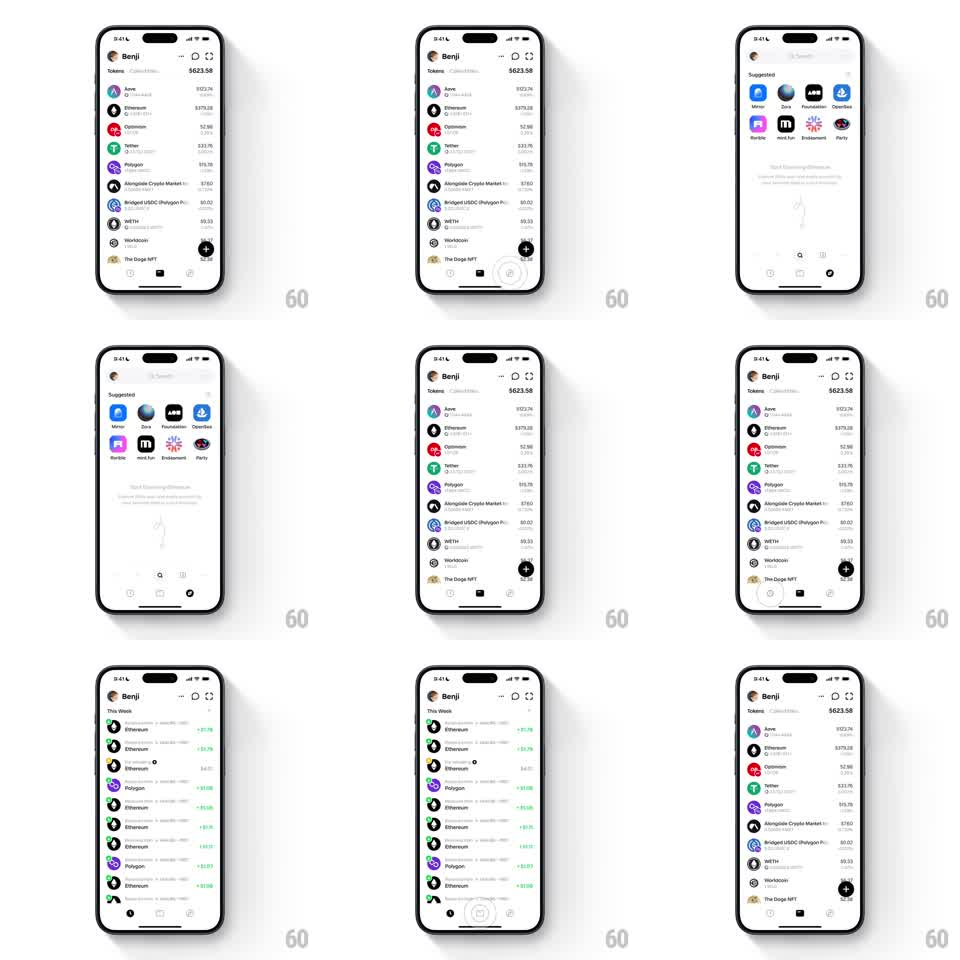

Media
Frame-by-frame

Rebuild this interaction 1:1: Family's morphing bottom navigation - the light tab bar fluidly expands, contracts, and merges its buttons as the active tab changes between the token list home and the dapp browser, the active icon growing into a labeled pill while neighbors compress.

Rebuild this interaction 1:1: Family's morphing bottom navigation - the light tab bar fluidly expands, contracts, and merges its buttons as the active tab changes between the token list home and the dapp browser, the active icon growing into a labeled pill while neighbors compress. ## Integration Integration: stack-agnostic spec - springs given as stiffness/damping, timed motions as duration + curve; map every value to your framework and animation library of choice. ## Scene Light wallet home: Benji header, "Tokens $623.58" list (Aave $922.74, Ethereum $375.08, Optimism $2.98, Tether $2.98, Polygon $15.75, Alongside Crypto Market $7.60, Bridged USDC $0.02, WETH $9.53, Worldcoin, The Doge NFT). Bottom bar: home, compass (browse), wallet, activity icons. Browse screen: "Suggested" dapp grid (Mirror, Zora, Foundation, OpenSea, Uniswap, mint.fun, Sound.xyz, Party), URL bar "Start Exploring Web3...", search field. A dark "This Week" activity view also appears. ## Motion spec Pattern: direction-aware tab bar morph with expanding active pill. - Tap a tab: the destination icon's circle expands into a rounded pill (width 44 -> 88pt, spring ~320/18, 300ms), its label fading in inside the pill (150ms, delayed 100ms), while the previously active pill contracts back to a bare circle (reverse spring, 250ms). - Adjacent icons slide to fill the freed space (translateX spring ~300/22), the bar's internal spacing easing so no gap flashes. - The content crossfades under the bar (200ms); on home the token list staggers in (40ms rows), on browse the Suggested grid pops (2 columns, 30ms stagger, scale 0.9 -> 1). - Switching directions reverses the travel: the pill grows toward the side the new tab sits on, icons compressing away from it. ## Calibration - The bar height never changes; only pill width and label visibility animate. - The active pill's fill is black with white glyph; inactive icons stay gray. ## Reduced motion Pill and label crossfade (200ms) without width animation. ## Don't miss - The browse screen's URL bar sits directly above the tab bar and shares its rounded language. - The activity icon shows a badge state in the dark "This Week" view.